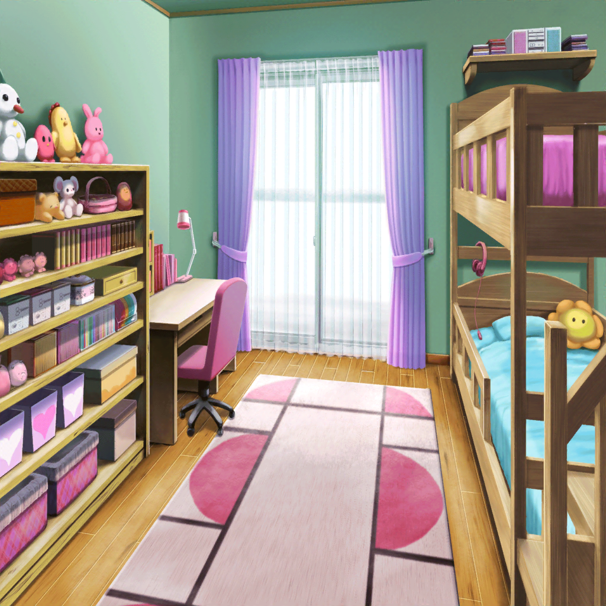

牛込家前
りみ
香澄ちゃん、沙綾ちゃん……
来てくれたんだ……
香澄
りみり～ん、会いたかったよ～
沙綾
ごめんね、急に押しかけちゃって。
風邪は大丈夫？
りみ
う、うん……
こっちこそごめんね、全然返信できなくて……
沙綾
ううん。
風邪なんだもん、しょうがないよ
りみ
う、うん……
りみ
（ホントは、ちょっと気まずくって
返信できなかったんだけど……）
香澄
りみりんが心配だから、すぐにでもお見舞いに
来たかったんだけど、具合が悪い時に
押しかけちゃうのは悪いからって、さーやが。……ね？
沙綾
ふふ。
香澄を引き止めるの、ホントに大変だったんだから
りみ
……あ、ありがとうね。
思った以上に風邪が長引いちゃって……
心配させちゃったよね？
りみ
けど、風邪はもう大丈夫だから、安心して
香澄
よかったー。
それならりみりん、明日は学校来る？
りみ
そ、それは……
沙綾
香澄～、病み上がりなんだからそんなにムリさせちゃダメだよ。
りみりん、ホントにムリしないでいいからね
りみ
うん……
りみ
あの……
今日、有咲ちゃんは？
りみ
あれ以来、練習もあんまりやれてないって
おたえちゃんからメッセージが来てたんだけど……
香澄
う、うん。
実はそうなんだよね。
有咲もかなり落ち込んでるみたいで……
りみ
有咲ちゃんが、落ち込んでる……？
香澄
この前の有咲、ちょっとヘンだったでしょ？
イライラしてるっていうか、怒りっぽいっていうか
りみ
それは、私が怒らせるようなことしちゃったから……
沙綾
ううん。そうじゃないよ。
有咲の様子がおかしくなったのって、たぶん……
テスト最終日のライブを提案したころから
りみ
……え？
香澄
有咲ね、１人で何かを悩んでるみたいなの。
聞いても私達には、なんにも話してくれなかったけど……
沙綾
それがあったから、この前の有咲は
りみりんにキツイこと言っちゃったんだと思うんだ……
香澄
だから、りみりん……っ。
あの時の有咲のこと、許してあげてね
りみ
（……有咲ちゃんが、悩みごと？）
香澄
……あ、あのさ、りみりん！
私達、りみりんのこと待ってるよ！
香澄
私、もう１回みんなのキラキラドキドキを取り戻すから！
だからりみりんも――
沙綾
香澄……
りみりん風邪なんだから、それくらいにしないと……っ
香澄
あ、そっか！ ごめん！
久しぶりにりみりんに会えたから、
つい色んなこと話したくなっちゃった！
香澄
それじゃあ、りみりん！
早く風邪治して、学校に来てね！
沙綾
待ってるからね
りみ
う、うん……
ありがと、ね……

牛込家 りみの部屋
りみ
有咲ちゃんが何か悩んでたって……
そんなことにも気づかないで、
私、あの時、練習を飛び出しちゃった……
りみ
……ごめんね、有咲ちゃん
ゆり
りみのこと心配して、香澄ちゃん達、来てくれたんだ？
りみ
あ、お姉ちゃん……っ！
ゆり
いい友達ができてホントによかったね、りみ
りみ
お姉ちゃん……
私、どうしたらいいのかな……？
ゆり
私はなんにもアドバイスしないよ。
だってこれは、りみが答えを出さないとダメなことだからね
りみ
私が……答えを出さないと……

市ヶ谷家
香澄
有咲、なかなか帰ってこないね……
沙綾
けど、香澄……
ホントに待ってるつもり？
香澄
私、これ以上気まずいの、嫌だから！
香澄
こんなことで気まずくなって一緒にいられないのって、
すっごいもったいない気がするから
香澄
私は１日でも早く、今まで通りのポピパに戻りたい！
沙綾
ただ、あの有咲の様子だと、
また避けられちゃうかもしれないね……
香澄
それならまた、明日の登校前にここに来るよ！
それでもダメなら、また次！ 私、絶対に諦めないから！
沙綾
話すことは考えてあるんだよね？
香澄
考えて…………ない。
とにかく私の気持ち、全部有咲にぶつけてみる！
沙綾
ふふ……
香澄ってホントすごいなー。
それでこそ香澄って感じ！
香澄
ちょっと、やめてよー！
全然すごくないって！
沙綾
香澄と友達になれてホントによかったって思ってるよ。
廊下の向こうに香澄がいて、私がもし隠れちゃったとしても、
香澄は、必死になって私のこと見つけてくれそうだもん
香澄
……うん！ 絶対見つける！
さーやだけじゃなくて、おたえもりみりんも、有咲も！
絶対に全員見つける！
沙綾
ありがと……
……あ、ウワサをすれば――
香澄
……有咲！
有咲
か、香澄……